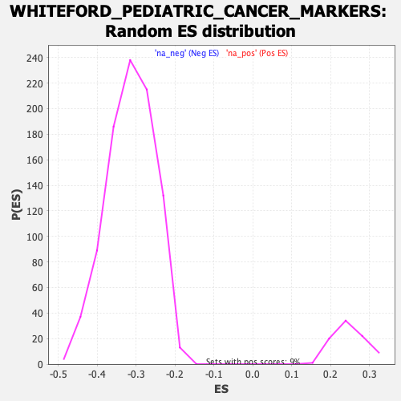

| | | Dataset | DE_genes2 |
| Phenotype | NoPhenotypeAvailable |
| Upregulated in class | na_neg |
| GeneSet | WHITEFORD_PEDIATRIC_CANCER_MARKERS |
| Enrichment Score (ES) | -0.788002 |
| Normalized Enrichment Score (NES) | -2.505314 |
| Nominal p-value | 0.0 |
| FDR q-value | 0.0 |
| FWER p-Value | 0.0 |
Table: GSEA Results Summary
 Fig 1: Enrichment plot: WHITEFORD_PEDIATRIC_CANCER_MARKERS
Fig 1: Enrichment plot: WHITEFORD_PEDIATRIC_CANCER_MARKERS
Profile of the Running ES Score & Positions of GeneSet Members on the Rank Ordered List
| PROBE | GENE SYMBOL | GENE_TITLE | RANK IN GENE LIST | RANK METRIC SCORE | RUNNING ES | CORE ENRICHMENT | | 1 | TUBA1A | | | 866 | 2.911 | -0.0463 | No |
| 2 | GAPDH | | | 2920 | 1.230 | -0.1686 | No |
| 3 | SOX4 | | | 3105 | 1.154 | -0.1773 | No |
| 4 | GPX7 | | | 3482 | 1.011 | -0.1979 | No |
| 5 | MLLT11 | | | 4990 | 0.573 | -0.2884 | No |
| 6 | RCC2 | | | 5757 | 0.393 | -0.3342 | No |
| 7 | MEX3B | | | 6326 | 0.281 | -0.3682 | No |
| 8 | SNRNP200 | | | 6798 | 0.185 | -0.3964 | No |
| 9 | STMN1 | | | 7057 | 0.145 | -0.4118 | No |
| 10 | PAFAH1B3 | | | 7297 | 0.098 | -0.4261 | No |
| 11 | MFN2 | | | 7657 | 0.040 | -0.4479 | No |
| 12 | RRP1 | | | 7887 | 0.006 | -0.4618 | No |
| 13 | ILF2 | | | 8387 | -0.074 | -0.4921 | No |
| 14 | ADGRL3 | | | 8759 | -0.145 | -0.5143 | No |
| 15 | EIF4EBP1 | | | 8951 | -0.182 | -0.5256 | No |
| 16 | ENO1 | | | 10001 | -0.461 | -0.5884 | No |
| 17 | CDK4 | | | 10174 | -0.517 | -0.5977 | No |
| 18 | PON3 | | | 10800 | -0.726 | -0.6342 | No |
| 19 | ILF3 | | | 12390 | -1.421 | -0.7278 | No |
| 20 | DTYMK | | | 12442 | -1.447 | -0.7277 | No |
| 21 | CDK6 | | | 12820 | -1.666 | -0.7470 | No |
| 22 | DNMT1 | | | 12826 | -1.669 | -0.7436 | No |
| 23 | NUDT1 | | | 13014 | -1.779 | -0.7511 | No |
| 24 | RNASEH2A | | | 13180 | -1.879 | -0.7570 | No |
| 25 | HMGB3 | | | 13350 | -1.994 | -0.7629 | No |
| 26 | NME1 | | | 13763 | -2.298 | -0.7829 | Yes |
| 27 | HAUS1 | | | 13843 | -2.366 | -0.7825 | Yes |
| 28 | TWIST1 | | | 13856 | -2.375 | -0.7780 | Yes |
| 29 | MCM5 | | | 13861 | -2.378 | -0.7731 | Yes |
| 30 | CKS1B | | | 13865 | -2.382 | -0.7680 | Yes |
| 31 | SLC25A40 | | | 13872 | -2.387 | -0.7631 | Yes |
| 32 | MCM7 | | | 13952 | -2.457 | -0.7625 | Yes |
| 33 | DHFR | | | 13968 | -2.471 | -0.7580 | Yes |
| 34 | ASF1B | | | 14048 | -2.550 | -0.7572 | Yes |
| 35 | NEK2 | | | 14051 | -2.552 | -0.7517 | Yes |
| 36 | RECQL4 | | | 14062 | -2.561 | -0.7466 | Yes |
| 37 | TYMS | | | 14161 | -2.652 | -0.7468 | Yes |
| 38 | ESPL1 | | | 14262 | -2.749 | -0.7468 | Yes |
| 39 | KPNA2 | | | 14317 | -2.796 | -0.7439 | Yes |
| 40 | BCAT1 | | | 14397 | -2.877 | -0.7424 | Yes |
| 41 | PTTG1 | | | 14464 | -2.952 | -0.7399 | Yes |
| 42 | CENPU | | | 14542 | -3.039 | -0.7379 | Yes |
| 43 | UBE2T | | | 14697 | -3.240 | -0.7402 | Yes |
| 44 | LMNB2 | | | 14879 | -3.473 | -0.7435 | Yes |
| 45 | CCNT1 | | | 14891 | -3.490 | -0.7365 | Yes |
| 46 | PCNA | | | 14896 | -3.501 | -0.7291 | Yes |
| 47 | MCM4 | | | 14906 | -3.510 | -0.7219 | Yes |
| 48 | ZNF300 | | | 14967 | -3.594 | -0.7176 | Yes |
| 49 | PLK4 | | | 15029 | -3.687 | -0.7132 | Yes |
| 50 | E2F1 | | | 15036 | -3.695 | -0.7054 | Yes |
| 51 | CDC25A | | | 15082 | -3.764 | -0.6999 | Yes |
| 52 | CKS2 | | | 15086 | -3.767 | -0.6918 | Yes |
| 53 | CENPN | | | 15099 | -3.785 | -0.6842 | Yes |
| 54 | ZWINT | | | 15107 | -3.798 | -0.6762 | Yes |
| 55 | CDCA8 | | | 15225 | -3.955 | -0.6747 | Yes |
| 56 | CCDC34 | | | 15229 | -3.961 | -0.6661 | Yes |
| 57 | TK1 | | | 15344 | -4.187 | -0.6638 | Yes |
| 58 | GGH | | | 15362 | -4.223 | -0.6556 | Yes |
| 59 | CDCA5 | | | 15393 | -4.273 | -0.6480 | Yes |
| 60 | POLE2 | | | 15406 | -4.310 | -0.6392 | Yes |
| 61 | PSAT1 | | | 15468 | -4.426 | -0.6332 | Yes |
| 62 | MYBL2 | | | 15492 | -4.462 | -0.6248 | Yes |
| 63 | AURKA | | | 15607 | -4.737 | -0.6213 | Yes |
| 64 | CCNB1 | | | 15643 | -4.796 | -0.6129 | Yes |
| 65 | UHRF1 | | | 15683 | -4.875 | -0.6045 | Yes |
| 66 | RRM2 | | | 15702 | -4.911 | -0.5948 | Yes |
| 67 | UBE2C | | | 15704 | -4.913 | -0.5840 | Yes |
| 68 | BIRC5 | | | 15741 | -4.998 | -0.5752 | Yes |
| 69 | NASP | | | 15792 | -5.106 | -0.5670 | Yes |
| 70 | RFC4 | | | 15807 | -5.149 | -0.5565 | Yes |
| 71 | CDK1 | | | 15810 | -5.156 | -0.5453 | Yes |
| 72 | CCNB2 | | | 15832 | -5.225 | -0.5351 | Yes |
| 73 | NCAPH | | | 15843 | -5.247 | -0.5241 | Yes |
| 74 | MND1 | | | 15853 | -5.271 | -0.5131 | Yes |
| 75 | TPX2 | | | 15859 | -5.288 | -0.5017 | Yes |
| 76 | DBF4 | | | 16002 | -5.664 | -0.4979 | Yes |
| 77 | RFC3 | | | 16020 | -5.728 | -0.4863 | Yes |
| 78 | MAD2L1 | | | 16043 | -5.805 | -0.4749 | Yes |
| 79 | ATAD2 | | | 16065 | -5.853 | -0.4633 | Yes |
| 80 | TMPO | | | 16067 | -5.864 | -0.4504 | Yes |
| 81 | ADCY3 | | | 16069 | -5.870 | -0.4376 | Yes |
| 82 | PRC1 | | | 16103 | -5.960 | -0.4265 | Yes |
| 83 | MELK | | | 16129 | -6.045 | -0.4147 | Yes |
| 84 | SNORD22 | | | 16134 | -6.058 | -0.4016 | Yes |
| 85 | BUB1 | | | 16142 | -6.084 | -0.3886 | Yes |
| 86 | ODC1 | | | 16212 | -6.391 | -0.3787 | Yes |
| 87 | GINS2 | | | 16213 | -6.392 | -0.3647 | Yes |
| 88 | CDC45 | | | 16272 | -6.693 | -0.3535 | Yes |
| 89 | ZNF367 | | | 16367 | -7.350 | -0.3430 | Yes |
| 90 | NUSAP1 | | | 16374 | -7.420 | -0.3270 | Yes |
| 91 | CCNA2 | | | 16376 | -7.439 | -0.3107 | Yes |
| 92 | NUF2 | | | 16382 | -7.475 | -0.2945 | Yes |
| 93 | CDCA2 | | | 16385 | -7.530 | -0.2781 | Yes |
| 94 | KIF11 | | | 16409 | -7.860 | -0.2622 | Yes |
| 95 | SMC4 | | | 16421 | -7.981 | -0.2453 | Yes |
| 96 | CENPA | | | 16438 | -8.139 | -0.2283 | Yes |
| 97 | TTK | | | 16444 | -8.189 | -0.2106 | Yes |
| 98 | PBK | | | 16458 | -8.487 | -0.1927 | Yes |
| 99 | DLGAP5 | | | 16482 | -9.145 | -0.1740 | Yes |
| 100 | MKI67 | | | 16483 | -9.193 | -0.1537 | Yes |
| 101 | CKAP2 | | | 16486 | -9.390 | -0.1332 | Yes |
| 102 | POLQ | | | 16490 | -9.648 | -0.1121 | Yes |
| 103 | TOP2A | | | 16497 | -9.873 | -0.0908 | Yes |
| 104 | CENPE | | | 16501 | -10.010 | -0.0689 | Yes |
| 105 | KIF14 | | | 16503 | -10.060 | -0.0468 | Yes |
| 106 | CENPF | | | 16507 | -10.688 | -0.0235 | Yes |
| 107 | CDCA7 | | | 16514 | -11.289 | 0.0010 | Yes |
Table: GSEA details [plain text format]

Fig 2: WHITEFORD_PEDIATRIC_CANCER_MARKERS: Random ES distribution
Gene set null distribution of ES for WHITEFORD_PEDIATRIC_CANCER_MARKERS